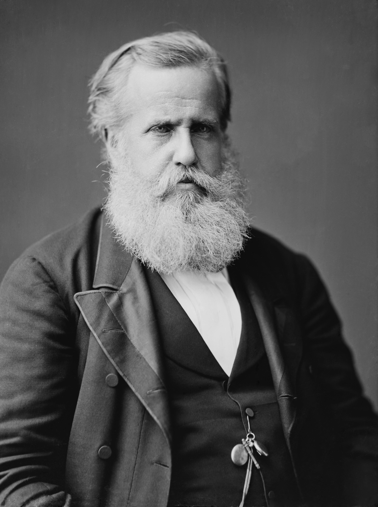
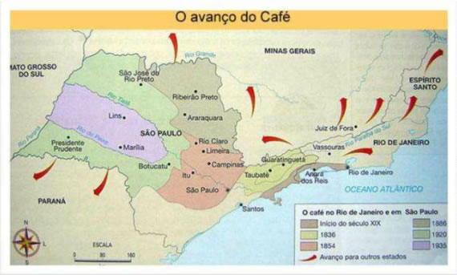

SEGUNDO REINADO
O Segundo Reinado corresponde ao período de 23 de julho de 1840 a 15 de novembro de 1889, quando o Brasil esteve sob reinado de D. Pedro II (1825-1891). Foi caracterizado como uma época de relativa paz entre as províncias brasileiras, a abolição gradual da escravidão e a Guerra do Paraguai (1864-1870). Encerra-se com o golpe republicano em 15 de novembro de 1889.

Dom Pedro II - Coroado Imperador do Brasil em 1840.
Política no Segundo Reinado
O Segundo Reinado começa, em 1840, com o Golpe da Maioridade. Durante o período regencial, o Brasil viveu uma série de guerras civis. Com isso, o Partido Liberal propõe a antecipação da maioridade do herdeiro do trono, Dom Pedro. Parte dos políticos entendiam que a falta de um governo central era um perigo para a unidade do país. A política do Segundo Reinado é marcada pela presença de dois partidos políticos:
- O Partido Liberal, cujos membros eram conhecidos como os “luzia”;
- O Partido Conservador, cujos membros eram conhecidos como os “saquarema”.
A rigor, ambos os partidos defendiam as ideias de elite, como a manutenção da escravidão. Somente se diferenciavam em relação ao poder central, com os liberais lutando por mais autonomia provincial e os conservadores por mais centralização.
Por causa da abdicação do seu pai, D. Pedro II sentiu a necessidade de mudar forma de governo. Por isso, em 1847, implanta o parlamentarismo no Brasil.
Aqui, o sistema funcionava um pouco diferente daquele praticado na Inglaterra. Ali, o primeiro-ministro era o deputado do partido mais votado.
Já no Brasil, o Presidente de Conselho (primeiro-ministro) era escolhido, pelo Imperador, a partir de uma lista com três nomes. Este sistema ficou conhecido como parlamentarismo às avessas.
O imperador também detinha o Poder Moderador, mas este foi usado poucas vezes pelo soberano.
Comparado ao período regencial (1831-1840), não houve muitos conflitos internos durante o Segundo Reinado. No entanto, podemos citar algumas revoltas como:
- A Revolução Praieira, de 1848-1850, em Pernambuco.
- A Revolta dos Muckers, no Rio Grande do Sul, em 1873-1874.
- A Revolta dos Quebra-Quilos, na região nordeste, em 1872-1877.
Economia no Segundo Reinado
Nessa época, as excelentes condições de plantio no Vale do Paraíba (RJ) alavancaram a produção e a exportação do café. Posteriormente, os cafezais se espalhariam por São Paulo.
O Brasil começou a exportar mais do que a importar e a procura pelo café era tão grande que havia necessidade de aumentar a mão de obra.

Contudo, a fim de proteger seus negócios, os fazendeiros de café viam com maus olhos as tentativas de qualquer lei que favorecesse a abolição da escravidão. Por isso, os latifundiários apoiam a vinda de imigrantes, especialmente italianos, para trabalharem nos cafezais.
Em decorrência do crescimento da exportação de café são construídas as primeiras ferrovias e nasceram cidades. Os portos de Santos e Rio de Janeiro prosperam.
Nessa época começam a ser montadas as primeiras fábricas no Brasil, ainda que de forma isolada e em grande parte devido ao trabalho do Barão de Mauá.
Abolicionismo no Segundo Reinado
Essa época é crucial para o processo de abolição das pessoas escravizadas, pois surgem diversas sociedades e jornais contra esta prática. Os escravos se mobilizam através dos quilombos e irmandades religiosas, mas também solicitam sua liberdade na Justiça.
A abolição da escravidão não era desejada pelos fazendeiros. Estes perderiam o investimento da compra das pessoas escravizadas e teriam que começar a pagar salário, diminuindo assim sua margem de lucro.
Desta maneira, lutam para que o governo pague indenização por cada escravo liberto. Como indenizar os fazendeiros estava fora de cogitação, o governo promulga leis que visam abolir o trabalho servil de forma gradual. São elas:
- Lei Eusébio de Queirós (1850);
- Lei do Ventre Livre (1871);
- Lei dos Sexagenários (1887);
- Lei Áurea (1888).
Política Exterior no Segundo Reinado
Guerra do Paraguai (1864-1870)
No plano internacional, o Brasil se envolveu em atritos com os seus vizinhos, especialmente na região do Prata.
Em resposta à invasão do Rio Grande do Sul, o governo imperial declara guerra ao ditador paraguaio Solano López (1827-1870), no episódio conhecido como Guerra do Paraguai. O conflito ainda contaria com a participação da Argentina e do Uruguai, e duraria cerca de cinco anos.
O Paraguai foi derrotado e Solano López morto por soldados brasileiros. O Exército se viu fortalecido após o conflito e passou a reivindicar mais espaço na política nacional.
Questão Christie
Da mesma maneira, o governo viu-se implicado na Questão Christie (1863-1865) quando houve incidentes com cidadãos britânicos em solo brasileiro. É importante lembrar que os súditos britânicos não eram julgados pelos tribunais brasileiros se cometessem algum delito no Império do Brasil.
A Questão Christie começou com um altercado entre marinheiros e oficiais britânicos no Rio de Janeiro e pela invasão e confisco de cinco barcos no porto do Rio de Janeiro, por uma fragata britânica.
O governo brasileiro pediu que os responsáveis respondessem judicialmente no país e que fosse paga uma indenização. Diante da recusa dos britânicos, o Brasil rompeu relações diplomáticas com o Reino Unido por dois anos.
Fim do Segundo Reinado e a Proclamação da República
Marechal Deodoro da Fonseca
Ao longo do seu governo, D. Pedro II se contrapôs com a igreja, com os militares e com a elite rural. Tudo isso foi retirando o apoio das figuras importantes do país ao trono.
Alguns episódios direcionaram os acontecimentos para um golpe militar. São exemplos a exigência de que a igreja não acatasse as ordens papais, sem as mesmas terem ter sido aprovadas pelo imperador, no que passou à História como a Questão Religiosa.
No entanto, foi a desvalorização dos militares e o fim da escravatura que mais incomodaram as elites e forçaram sua deposição.
Os militares reclamavam mais reconhecimento, aumento de salário e promoções que não eram realizadas. Tudo isso fez com que alguns oficiais aderissem aos ideais republicanos.
Igualmente, a elite latifundiária não pôde suportar a ideia da abolição da escravidão. Assim República é instituída, sem participação popular, no dia 15 de novembro de 1889 pelo Marechal Deodoro da Fonseca, o qual foi o primeiro presidente do Brasil.
Exercícios logo abaixo, clique no botão para aparecer

(Enem 2017) O movimento abolicionista, que levou à libertação dos escravos pela Lei Áurea em 13 de maio de 1888, foi a primeira campanha de dimensões
nacionais com participação popular. Nunca antes tantos brasileiros se haviam mobilizado de forma tão intensa por uma causa comum, nem mesmo durante a Guerra
do Paraguai. Envolvendo todas as regiões e classes sociais, carregou multidões a comícios e manifestações públicas e mudou de forma dramática as relações
políticas e sociais que até então vigoravam no país.
GOMES, L. 1889. São Paulo: Globo, 2013. (Adaptado.)
O movimento social citado teve como seu principal veículo de propagação o(a):
(ENEM 2017) Com a Lei de Terras de 1850, o acesso à terra só passou a ser possível por meio da compra com pagamento em dinheiro. Isso limitava, ou mesmo
praticamente impedia, o acesso à terra para os trabalhadores escravos que conquistavam a liberdade.
OLIVEIRA, A. U. Agricultura brasileira: transformações recentes. In: ROSS, J. L. S. Geografia do Brasil. São Paulo: Edusp, 2009.
O fato legal evidenciado no texto acentuou o processo de: